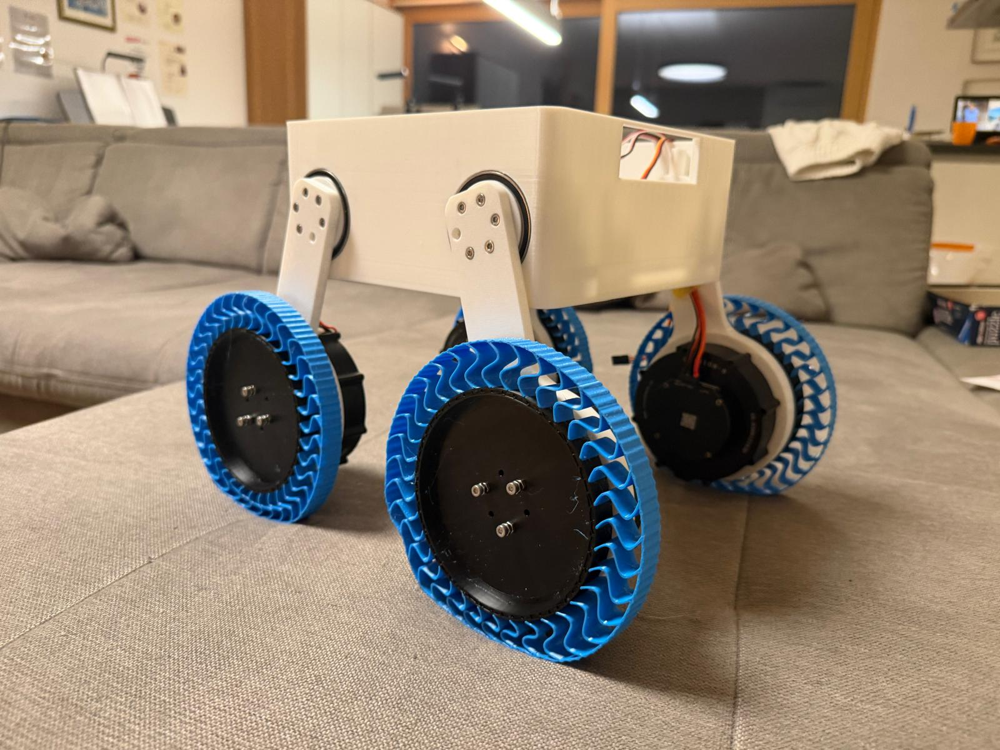
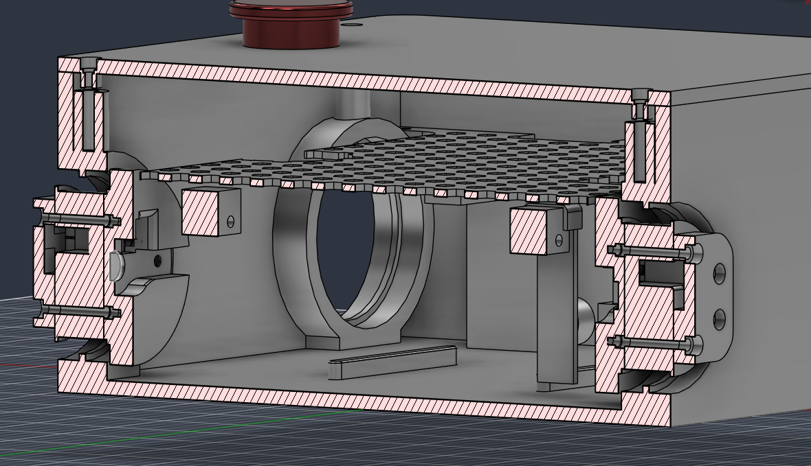
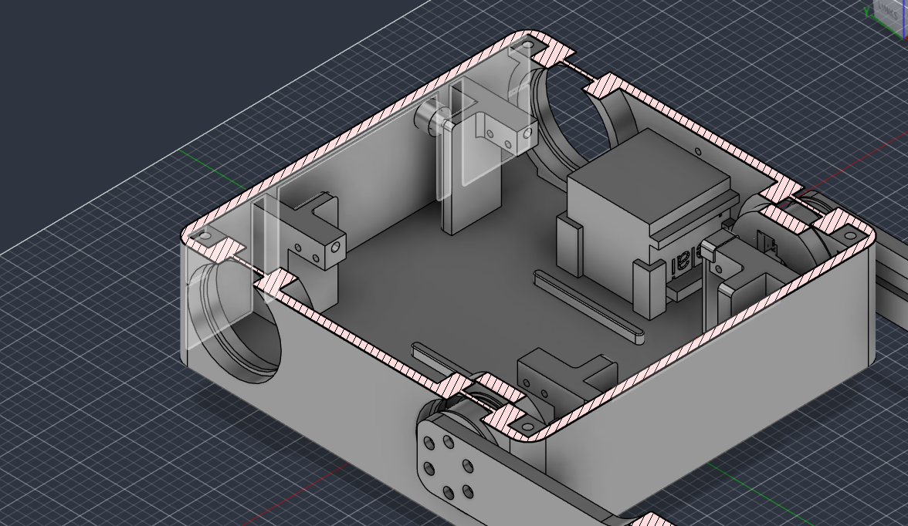
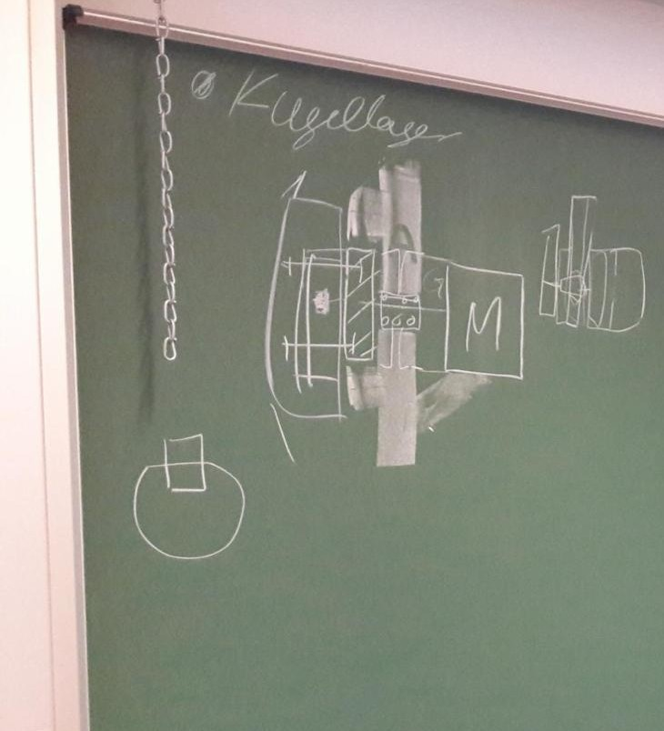
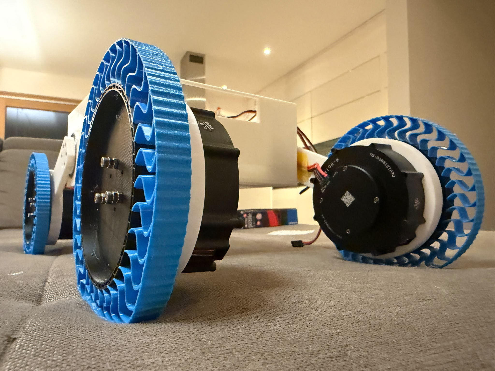
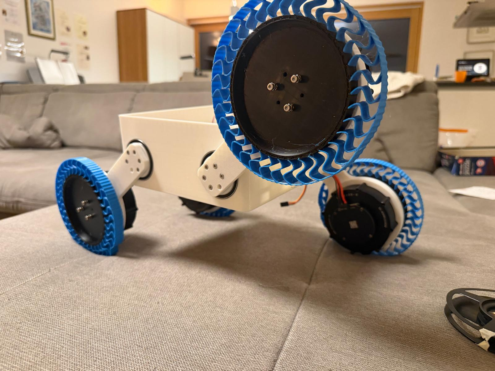
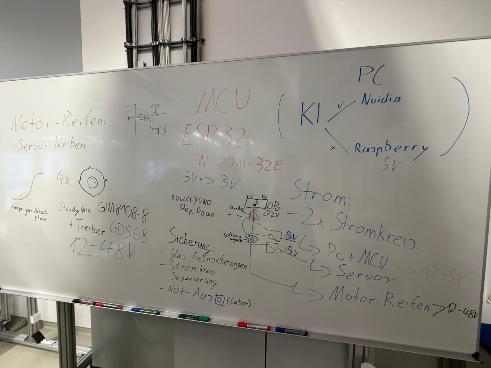
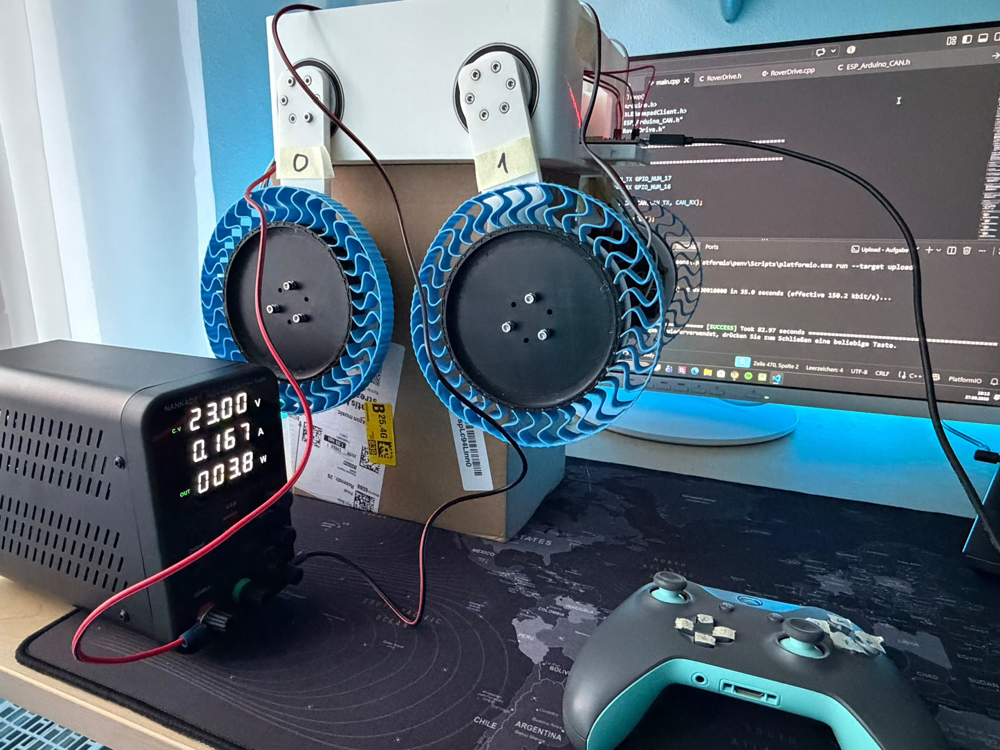
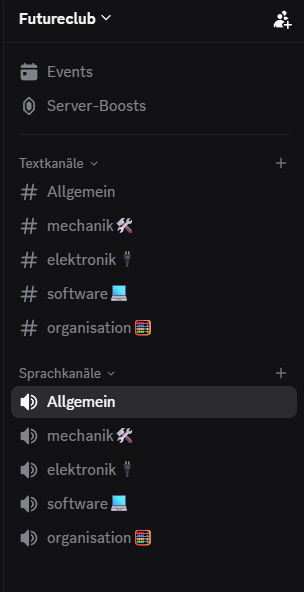

Future Club
Rover.
Im Future Club THI begleite ich die Entwicklung eines mobilen Rovers mit vier unabhängig beweglichen Achsarmen inzwischen zunehmend in einer tutorähnlichen Rolle weiter. Technisch konnte ich die CAN-Kommunikation mit allen Motoren lösen, die Controller-basierte Einzelmotorsteuerung aufbauen und erste Fahrfunktionen implementieren. Damit ist eine belastbare Software- und Steuerungsbasis für die nächsten Entwicklungsstufen gelegt.

Die CAN-Kommunikation mit allen Motoren konnte ich eigenständig in Betrieb nehmen. Die entscheidende Hürde lag dabei vor allem in der korrekten Node-ID-Logik, über die die Motoren sauber adressiert werden. Über den Controller lassen sich die einzelnen Motoren nun gezielt auswählen, mit Anrampung beschleunigen und bereits in ersten Fahrfunktionen nutzen.
Vier unabhängig ansteuerbare Achsen mit eigener Lager- und Kabelführung.
Ein Schwerpunkt der bisherigen Arbeit lag auf der mechanischen Weiterentwicklung der vier Achsarme. Die einzelnen Achsen werden durch speziell ausgelegte Bauteile zusammengehalten: Zwei kreisförmige Platten werden miteinander verspannt und bilden die mechanische Aufnahme, während die Achse über ein Kugellager gelagert wird.
Die Arme verfügen außerdem über integrierte Kabelkanäle, sodass die Leitungen innerhalb der Konstruktion geführt werden können. Die CAD-Ansichten zeigen sowohl die Gesamtstruktur als auch den mechanischen Aufbau im Detail; die Tafel-Skizze ergänzt die zugrunde liegenden Konstruktionsüberlegungen.



Vom konstruierten Aufbau zum funktionsfähigen Rover-Prototyp.
Die mechanische Grundstruktur mit vier Achsarmen, Radmotoren und zentralem Gehäuse ist inzwischen praktisch aufgebaut. Die neuen Prototypenbilder zeigen den aktuellen Stand deutlich näher am späteren Gesamtsystem als die bisherigen CAD- und Aufbauphasen.


Die elektronische Architektur ist umgesetzt – inklusive funktionierendem CAN-Bus.
Zur Systemarchitektur gehören die getrennte Versorgung von Motoren und Feinelektronik, die Motorcontroller und die Kommunikation mit dem ESP32. Ein wichtiger technischer Meilenstein war die erfolgreiche CAN-Kommunikation mit allen Motoren. Die entscheidende Hürde lag dabei vor allem in der sauberen Node-ID-Adressierung, sodass jeder Motor zuverlässig angesprochen werden kann.
Damit können Steuerbefehle gezielt übertragen und die Bewegungen der einzelnen Antriebe koordiniert werden. Diese Basis wird nun genutzt, um die Fahrlogik, die Achsarm-Steuerung und weitere Automatisierungsfunktionen systematisch auszubauen.

Systemarchitektur
Alle Teile besitzen einen festen Platz. Die Trennung von Motorversorgung und Feinelektronik bildet die Grundlage für einen robusten weiteren Aufbau.
Alle vier Motoren lassen sich jetzt gezielt ansteuern – inklusive erster Fahrfunktionen.
Die CAN-Kommunikation mit allen Motoren konnte ich eigenständig in Betrieb nehmen. Die entscheidende Hürde lag dabei vor allem in der korrekten Node-ID-Logik, über die die Motoren sauber adressiert werden. Auf dieser Basis lassen sich die einzelnen Motoren nun gezielt über einen Controller auswählen und steuern.
Zusätzlich ist eine Anrampung der Beschleunigung integriert, wodurch Fahrbefehle kontrollierter umgesetzt werden. Neben der Einzelmotorsteuerung existieren bereits erste vorgefertigte Fahrfunktionen wie Vorwärts, Rückwärts sowie Links- und Rechtsdrehen auf der Stelle. Gleichzeitig wurde die Codebasis für weitere Funktionen vorbereitet, eine erste Fahrlogik aufgebaut und auch Sicherheitsaspekte – etwa beim Stromausfall oder Abschalten der Motoren – berücksichtigt.

Als Nächstes: Armsteuerung, Hindernisparcours und danach Sensorik + ROS.
Die Basis für die weitere Rover-Steuerung steht jetzt deutlich stabiler: Einzelmotorsteuerung, Anrampung und erste Fahrfunktionen funktionieren bereits. Beim nächsten Treffen soll die Steuerung so erweitert werden, dass jeder Achsarm gezielt angesteuert werden kann. Danach wird der Rover auf einem Hindernisparcours getestet. Anschließend folgen Kamera und weitere Sensoren sowie der Raspberry Pi 5 als High-Level-Recheneinheit, bevor später ROS und autonome Navigationsfunktionen hinzukommen.
CAN + NODE-ID
ErreichtAlle Motoren sind zuverlässig adressierbar und per ESP32 ansprechbar.
EINZELMOTORSTEUERUNG
ErreichtJeder Motor kann gezielt über den Controller ausgewählt und angesteuert werden.
FAHRFUNKTIONEN
In ArbeitVorwärts, Rückwärts sowie Drehungen auf der Stelle sind bereits angelegt.
ARMSTEUERUNG + PARCOURS
Als NächstesGezielte Steuerung der Achsarme und erster Test unter realen Hindernissen.
SENSORIK + PI 5 + ROS
AusbauKamera, Sensoren, High-Level-Steuerung und später autonome Navigation.
Ich bleibe beteiligt – zunehmend in einer tutorähnlichen Rolle.
Da ich inzwischen kein Schüler mehr bin, verändert sich meine Rolle im Projekt: Ich begleite den Rover nicht mehr als klassisches Gruppenmitglied aus der Schulphase, sondern zunehmend als technischer Unterstützer und Tutor. Dabei kann ich meine bisherigen Erfahrungen aus Mechanik, Elektronik und Software direkt einbringen und das Team bei weiteren Entwicklungsschritten unterstützen.
Die organisatorische Abstimmung läuft weiterhin über Discord- und WhatsApp-Kanäle, sodass ich auch künftig in die Entwicklung eingebunden bleibe und bei Fragen oder technischen Problemen gezielt helfen kann.

Vom mechanischen Konzept zum gezielt fahrbaren Rover – und weiter zur Autonomie.
Der Rover hat einen deutlichen Entwicklungssprung gemacht: Alle Motoren sind über CAN ansprechbar, die Einzelmotorsteuerung funktioniert, erste Fahrfunktionen sind integriert und die Softwarebasis für weitere Funktionen ist vorbereitet. Gleichzeitig wurden auch Sicherheitsaspekte – etwa beim Stromausfall der Motoren – bereits berücksichtigt. Als Nächstes folgen die gezielte Armsteuerung und der Hindernisparcours, bevor Sensorik, Kamera, Raspberry Pi 5 und ROS die nächsten Ausbaustufen bilden.